- Plug-in WindowBuilder para crear interfaces visuales. |
El objetivo de este concepto es conocer el empleo del plug-in WindowBuilder para el desarrollo de interfaces visuales arrastrando componentes.
A partir de la versión 3.7 de Eclipse (Indigo) se incorpora por defecto el plug-in WindowBuilder para la implementación de interfaces visuales.
A medida que uno arrastra componentes visuales sobre un formulario se genera en forma automática el código Java, esto nos permite ser más productivos en el desarrollo de la interfaz de nuestra aplicación y nos ayuda a concentrarnos en la lógica de nuestro problema.
1 - Creación de un proyecto.
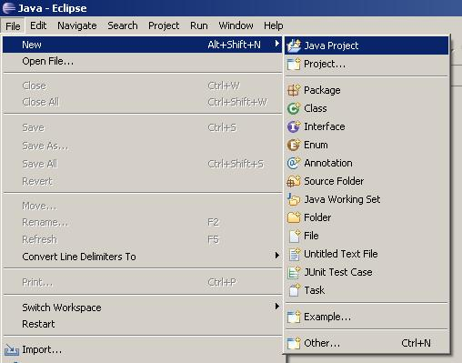2 - Seleccionamos el nombre de nuestro proyecto (lo llamaremos PruebaWindowBuilder):
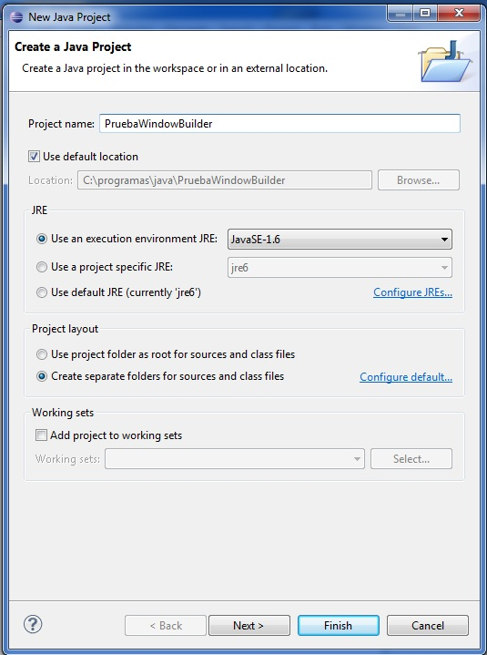3 - Ahora seleccionamos la opción del menú File -> New -> Other ...
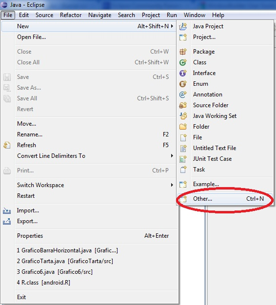4 - Seleccionamos la opción la opción JFrame:
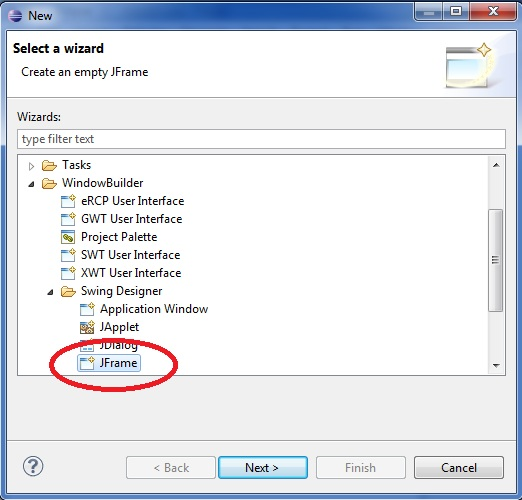5 - Seguidamente presionamos el botón Next > y definimos el nombre de la clase a crear (Ventana1):
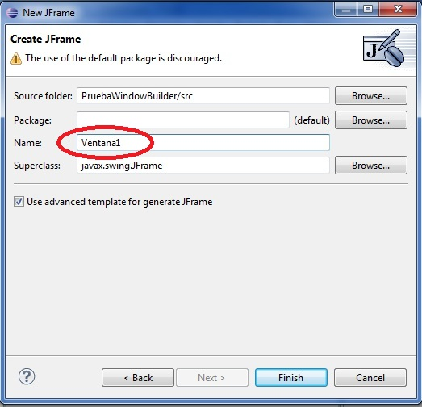Tenemos en este momento nuestra aplicación mínima generada por el WindowBuilder. Podemos observar que en la parte inferior de la ventana central aparecen dos pestañas (Source y Design) estas dos pestañas nos permiten ver el código fuente de nuestro JFrame en vista de diseño o en vista de código Java:
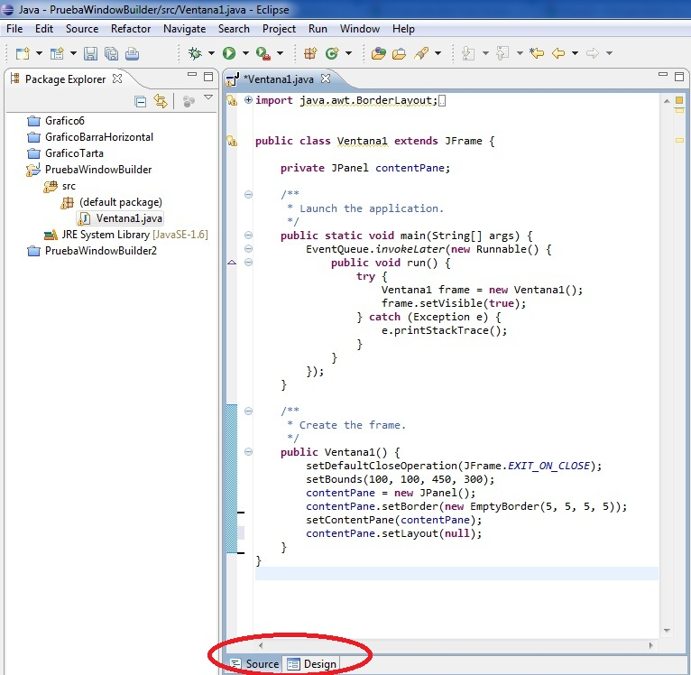Luego en vista de "Design":
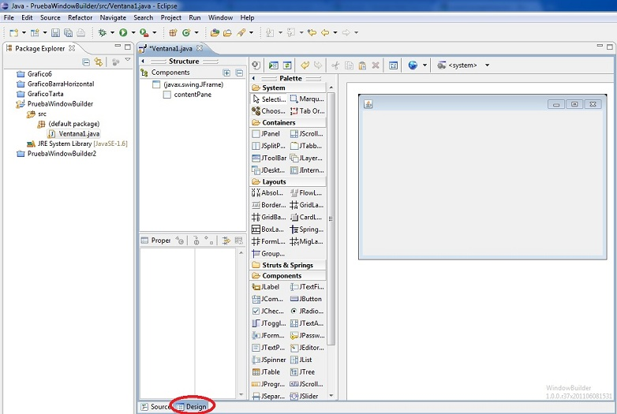6 - Configuramos el Layout de JFrame presionando el botón derecho del mouse sobre el formulario generado y seleccionamos la opción SetLayout > Absolute layout (esto nos permite luego disponer controles visuales como JButton, JLabel etc. en posiciones fijas dentro del JFrame):
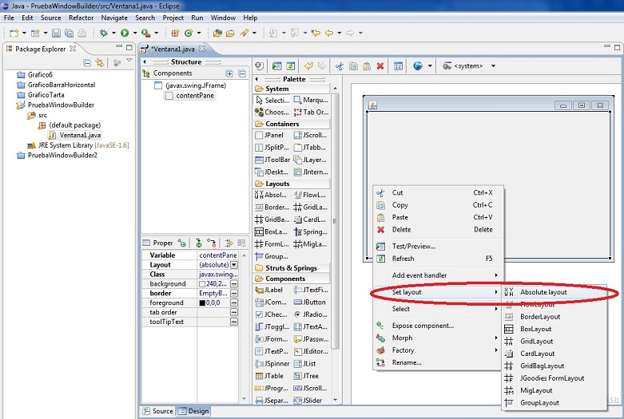7 - De la ventana Palette seleccionamos con el mouse un objeto de la clase JButton (presionamos con el mouse dicha componente, deberá aparecer seleccionada) y luego nos desplazamos con el mouse sobre el JFrame y presionamos el botón del mouse nuevamente ( en este momento aparece el botón dentro del JFrame):
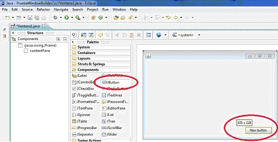En todo momento podemos cambiar la pestaña de "Source" y "Design" para ver el código generado. Por ejemplo cuando agregamos el botón podemos ver que se agregó un objeto de la clase JButton al constructor:
import java.awt.BorderLayout;
import java.awt.EventQueue;
import javax.swing.JFrame;
import javax.swing.JPanel;
import javax.swing.border.EmptyBorder;
import javax.swing.JButton;
public class Ventana1 extends JFrame {
private JPanel contentPane;
/**
* Launch the application.
*/
public static void main(String[] args) {
EventQueue.invokeLater(new Runnable() {
public void run() {
try {
Ventana1 frame = new Ventana1();
frame.setVisible(true);
} catch (Exception e) {
e.printStackTrace();
}
}
});
}
/**
* Create the frame.
*/
public Ventana1() {
setDefaultCloseOperation(JFrame.EXIT_ON_CLOSE);
setBounds(100, 100, 450, 300);
contentPane = new JPanel();
contentPane.setBorder(new EmptyBorder(5, 5, 5, 5));
setContentPane(contentPane);
contentPane.setLayout(null);
JButton btnNewButton = new JButton("New button");
btnNewButton.setBounds(335, 228, 89, 23);
contentPane.add(btnNewButton);
}
}
Crear un proyecto y luego un JFrame con las siguientes componentes visuales :
Dos controles de tipo JLabel, dos JTextField y dos JButton (previamente definir el layout para el panel contenido en el JFrame de tipo Absolute Layout)
Si hacemos doble clic con el mouse en la pestaña Ventana1.java podemos maximizar el espacio de nuestro editor visual (haciendo nuevamente doble clic vuelve al tamaño anterior)
Seleccionemos el primer JLabel de nuestro formulario y observemos las distintas partes que componen el plug-in WindowBuilder. En la parte superior izquierda se encuentra la sección "Structure" donde se muestran las componentes visuales agregadas al formulario. Aparece resaltada la que se encuentra actualmente seleccionada.
En la parte inferior aparece la ventana de "Properties" o propiedades del control visual
Veamos algunas propiedades que podemos modificar desde esta ventana y los cambios que se producen en el código fuente en java.
La propiedad text cambia el texto que muestra el objeto JLabel. Probemos de disponer el texto "Ingrese nombre de usuario:". De forma similar hagamos los cambios en la propiedad text de los otros controles visuales de nuestro JFrame:
Si ahora seleccionamos la pestaña inferior para ver la vista de código java: "Source" podemos ver que el WindowBuilder nos generó automáticamente el código para inicializar los textos de los controles JLabel y JButton:
import java.awt.BorderLayout;
import java.awt.EventQueue;
import javax.swing.JFrame;
import javax.swing.JPanel;
import javax.swing.border.EmptyBorder;
import javax.swing.JLabel;
import javax.swing.JTextField;
import javax.swing.JButton;
public class Ventana1 extends JFrame {
private JPanel contentPane;
private JTextField textField;
private JTextField textField_1;
/**
* Launch the application.
*/
public static void main(String[] args) {
EventQueue.invokeLater(new Runnable() {
public void run() {
try {
Ventana1 frame = new Ventana1();
frame.setVisible(true);
} catch (Exception e) {
e.printStackTrace();
}
}
});
}
/**
* Create the frame.
*/
public Ventana1() {
setDefaultCloseOperation(JFrame.EXIT_ON_CLOSE);
setBounds(100, 100, 450, 203);
contentPane = new JPanel();
contentPane.setBorder(new EmptyBorder(5, 5, 5, 5));
setContentPane(contentPane);
contentPane.setLayout(null);
JLabel lblNewLabel = new JLabel("Ingrese nombre de usuario:");
lblNewLabel.setBounds(20, 21, 149, 14);
contentPane.add(lblNewLabel);
JLabel lblNewLabel_1 = new JLabel("Ingrese clave:");
lblNewLabel_1.setBounds(20, 61, 125, 14);
contentPane.add(lblNewLabel_1);
textField = new JTextField();
textField.setBounds(179, 18, 225, 20);
contentPane.add(textField);
textField.setColumns(10);
textField_1 = new JTextField();
textField_1.setBounds(179, 58, 225, 20);
contentPane.add(textField_1);
textField_1.setColumns(10);
JButton btnNewButton = new JButton("Aceptar");
btnNewButton.setBounds(178, 89, 89, 23);
contentPane.add(btnNewButton);
JButton btnNewButton_1 = new JButton("Cancelar");
btnNewButton_1.setBounds(315, 89, 89, 23);
contentPane.add(btnNewButton_1);
}
}
Como podemos observar ahora cuando se crean los objetos de la clase JLabel en el constructor se inicializan con los valores cargados en la propiedad text:
JLabel lblNewLabel = new JLabel("Ingrese nombre de usuario:");
.....
JLabel lblNewLabel_1 = new JLabel("Ingrese clave:");
.....
JButton btnNewButton = new JButton("Aceptar");
.....
JButton btnNewButton_1 = new JButton("Cancelar");
.....
Crear la interfaz visual que aparece abajo. Inicializar las propiedades que corresponde.
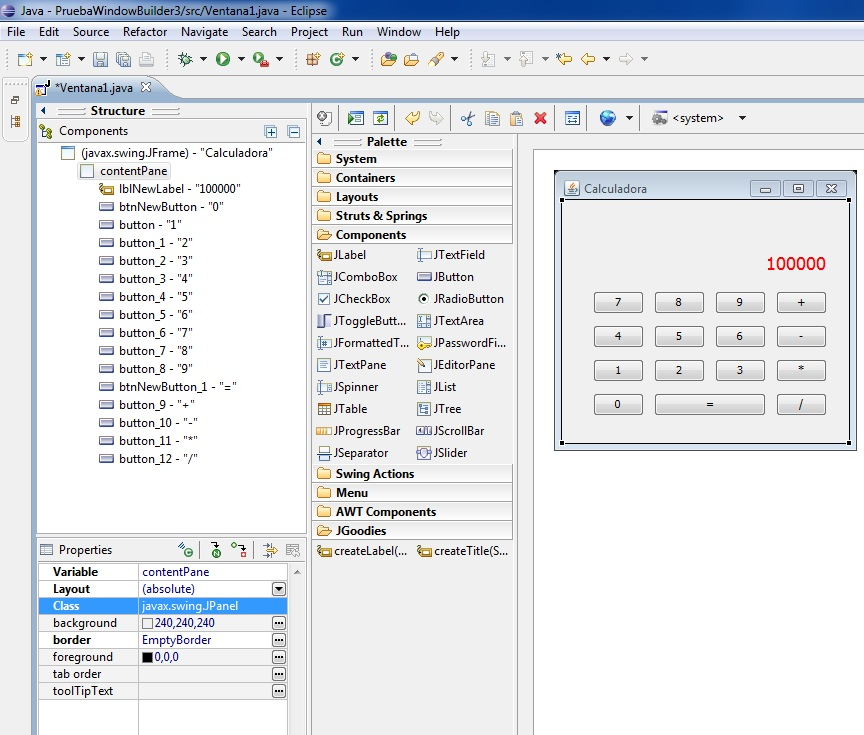Para asociar eventos el plug-in WindowBuilder nos proporciona una mecánica para automatizar la generación de las interfaces que capturan los eventos de los objetos JButton, JMenuItem, JList etc.
Crearemos una interfaz visual similar a esta (tres controles de tipo JLabel, dos JTextField y un JButton):
Ahora seleccionamos el control JButton y en la ventana de propiedades presionamos el icono de la parte superior:
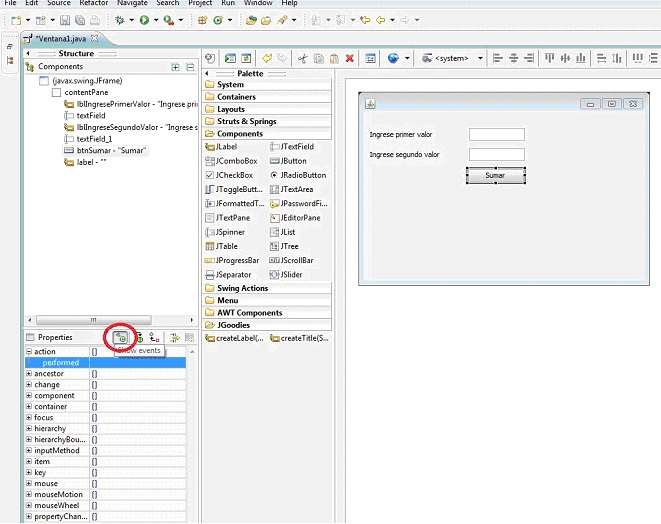Hacemos doble clic sobre la palabra performed y vemos que se abre el editor de texto y aparece el siguiente código generado automáticamente:
btnSumar.addActionListener(new ActionListener() {
public void actionPerformed(ActionEvent e) {
}
});
En el parámetro del método addActionListener del botón que suma se le pasa la referencia a una interface que se crea de tipo ActionListener e implementa el método actionPerformed donde agregaremos el código necesario para responder el evento.
Para este problema debemos rescatar los valores almacenados en los controles de tipo JTextField, convertirlos a entero, sumarlos y enviar dicho resultado a una JLabel.
btnSumar.addActionListener(new ActionListener() {
public void actionPerformed(ActionEvent e) {
int v1=Integer.parseInt(textField.getText());
int v2=Integer.parseInt(textField_1.getText());
int suma=v1+v2;
lblResultado.setText(String.valueOf(suma));
}
});
Cuando compilamos vemos que no tenemos acceso al objeto lblResultado ya que está definido como una variable local al constructor. Si queremos que se definan como atributos de la clase debemos seleccionar la JLabel y presionar "convert Local to Field" (convertir de variable local a atributo de la clase):
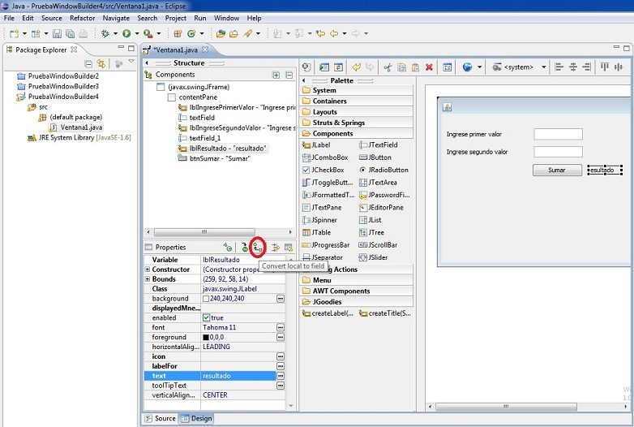Después de esto podemos acceder desde el método actionPerformed a la label.
Crear un menú de opciones que permita cambiar el color de fondo. Disponer un JMenuBar, un JMenu y 3 objetos de la clase JMenuItem. Asociar los eventos respectivos para cada control de tipo JMenuItem.
La interfaz visual debe quedar similar a la siguiente:
Para crear esta interface debemos primero seleccionar la pestaña "Menu" donde se encuentran las componentes relacionadas a la creación de menúes.
Debemos agregar (en este orden las siguientes componentes):
1 - Un JMenuBar en la parte superior.
2 - Un objeto de la clase JMenu en la barra del JMenuBar (podemos disponer el texto que queremos que se muestre)
3 - Agregamos un objeto de la clase JMenuItem en el sector donde aparece el texto: "Add items here". Los mismos pasos hacemos para agregar los otros dos JMenuItem.
Ahora debemos asociar el evento clic para cado JMenuItem. Seleccionamos primero el control de tipo JMenuItem y en la ventana de "Properties" presionamos el botón "Show events" y generamos el actionPerformed para el JMenuItem seleccionado.
Luego codificamos:
mntmRojo.addActionListener(new ActionListener() {
public void actionPerformed(ActionEvent arg0) {
contentPane.setBackground(Color.red);
}
});
Para cambiar el color del JFrame en realidad debemos modificar el color del JPanel que cubre el JFrame. El objeto de la clase JPanel llamado contentPane tiene un método llamado setBackground que nos permite fijar el color de fondo.
De forma similar asociamos los eventos para los otros dos objetos de la clase JMenuItem:
JMenuItem mntmVerde = new JMenuItem("Verde");
mntmVerde.addActionListener(new ActionListener() {
public void actionPerformed(ActionEvent e) {
contentPane.setBackground(Color.green);
}
});
mnNewMenu.add(mntmVerde);
JMenuItem mntmAzul = new JMenuItem("Azul");
mntmAzul.addActionListener(new ActionListener() {
public void actionPerformed(ActionEvent e) {
contentPane.setBackground(Color.blue);
}
});